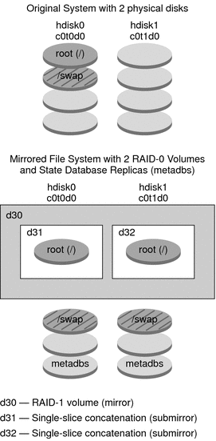

|
|||||||
|
Part I Overall Planning of Any Solaris Installation or Upgrade 1. Where to Find Solaris Installation Planning Information 2. What's New in Solaris Installation 3. Solaris Installation and Upgrade (Roadmap) 4. System Requirements, Guidelines, and Upgrade (Planning) 5. Gathering Information Before Installation or Upgrade (Planning) Part II Understanding Installations That Relate to GRUB, Solaris Zones, and RAID-1 Volumes 6. x86: GRUB Based Booting for Solaris Installation 7. Upgrading When Solaris Zones Are Installed on a System (Planning) 8. Creating RAID-1 Volumes (Mirrors) During Installation (Overview) Overview of Solaris Volume Manager Components 9. Creating RAID-1 Volumes (Mirrors) During Installation (Planning) |
Example of RAID-1 Volume Disk LayoutThe following figure shows a RAID-1 volume that duplicates the root file system (/) over two physical disks. State database replicas (metadbs) are placed on both disks. Figure 8-2 RAID-1 Volume Disk LayoutFigure 8-2 shows a system with the following configuration.
|
||||||
|